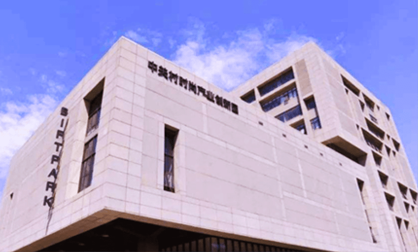
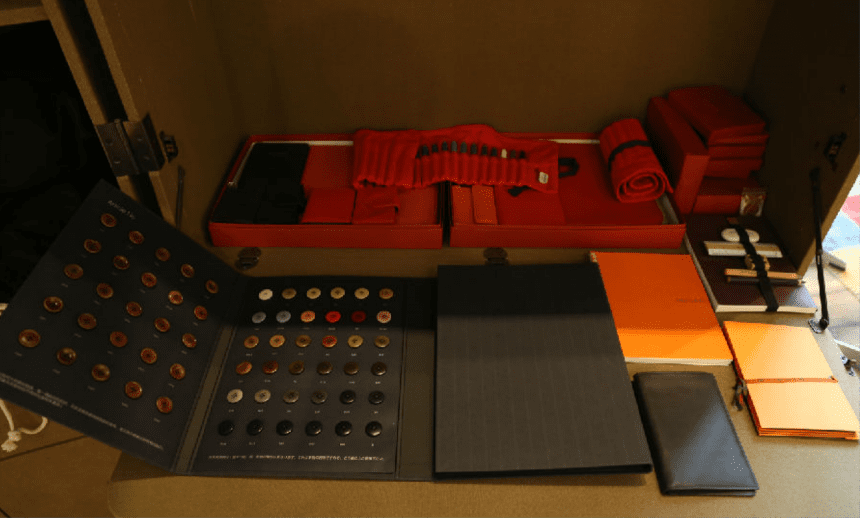

BIFT PARK 于2012年3月由北京市人民政府与北京服装学院共建的“中关村科学城第四批签约项目
北京服装学院服饰时尚设计产业创新园（简称中关村时尚产业创新园）
并由北京北服时尚投资管理中心负责运营管理。
总面积占地10000平方米的BIFTPARK中关村时尚产业创新园，毗邻美丽的元大都城垣遗址公园，是在京高校签约中关村科学城7个文化产业项目中，唯一的服饰时尚设计产业园。
园区将打造成为全球知名的青年设计师聚集中心助力北京乃至全国时尚创意产业的蓬勃发展。
BIFT PARK Sub Park

青年设计师聚焦
Young Designers Gathering
园区构建大学生及青年设计师创意创业中心。下设设计师资源中心，打造时尚微型产业链
；辅以工商注册、财税事务、基础办公、资金扶持等公共服务项目进行支持，帮助设计师
建立工作室、提供产品展示及售卖空间；同时协助设计师拓展优质产品销售渠道，为其个
人品牌进行整体包装和推广。
Young Designers Gathering
园区依托北京服装学院，拥有国际化专业权威的时尚设计研发团队。包括国家服装安全
研究与检测中心、中小学校服设计研发中心、服装数字化技术研究与推广中心、传统服
饰文化传承与设计创新中心、企业文化产品研发中心等，在举全力推动首都时尚产业繁
荣发展的同时，为社会各界提供所需的优质服务。
Service Platform for Fashion Industry

时尚产业服务平台
Service Platform for Fashion Industry

时尚设计与研发
Fashion Design and Research
创新园以聚集全球青年时尚创意创新人才为主要内容，建设时尚产业公共服务平台，时尚产
品设计师(时装、首饰、配饰及其他)创作及创业孵化基地。包括但不限于设计资源中心、设
计师聚集线上平台、设计师推广中心、演出与模特经纪中心、产品研发与品牌运营中心、产
品展示展卖中心、服装安全检测中心、平面广告设计中心、传统服饰文化传承中心（传习馆）
通过提供专业化的服务，将资本与技术有机的结合起来，为推动北京服装学院产学研一体化
建设、提升中关村科技园区自主创新能力、发展时尚创意产业等发挥重要作用。
Fashion Design and Research
位于中关村时尚产业创新园BIFTPARK一层100号，为设计师提供各种优质面料资源、制版
样衣等制作资源，整合设计制衣链条中各个环节的衔接；为面料商、制版师、样衣师、加
工商等资源，拓宽市场销售与研发渠道；对接院校科研成果。为更好服务于设计师与各资
源商，实现设计资源信息交流的畅通高效，设计资源中心创建网站平台，在这个平台上汇
集面料资源和服装制作资源等，设计师们获取这些资源信息都是免费的，我们的愿景是打
造助力设计师与品牌成长的时尚产业链。
Design Resource Center

设计资源中心
Design Resource Center